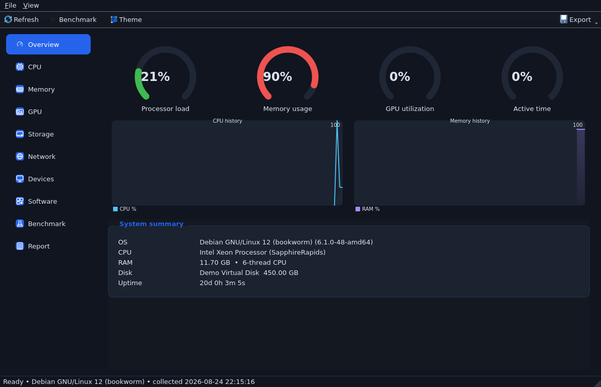
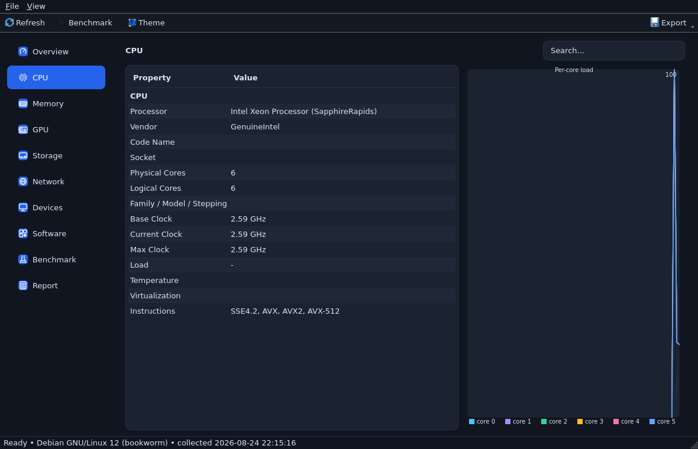
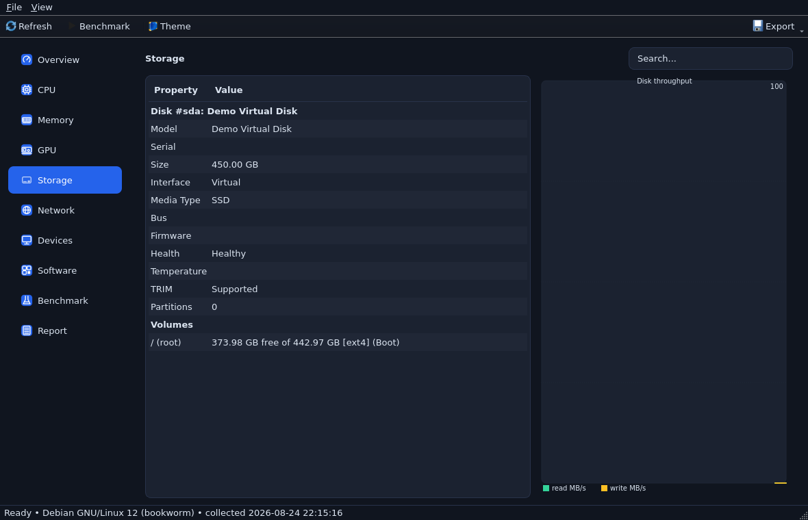
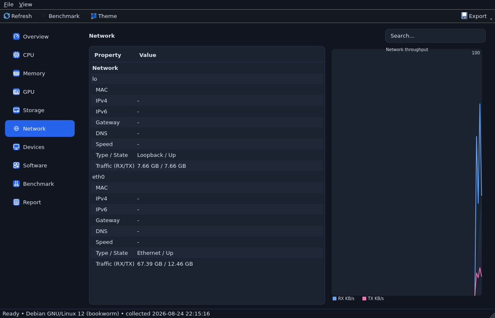
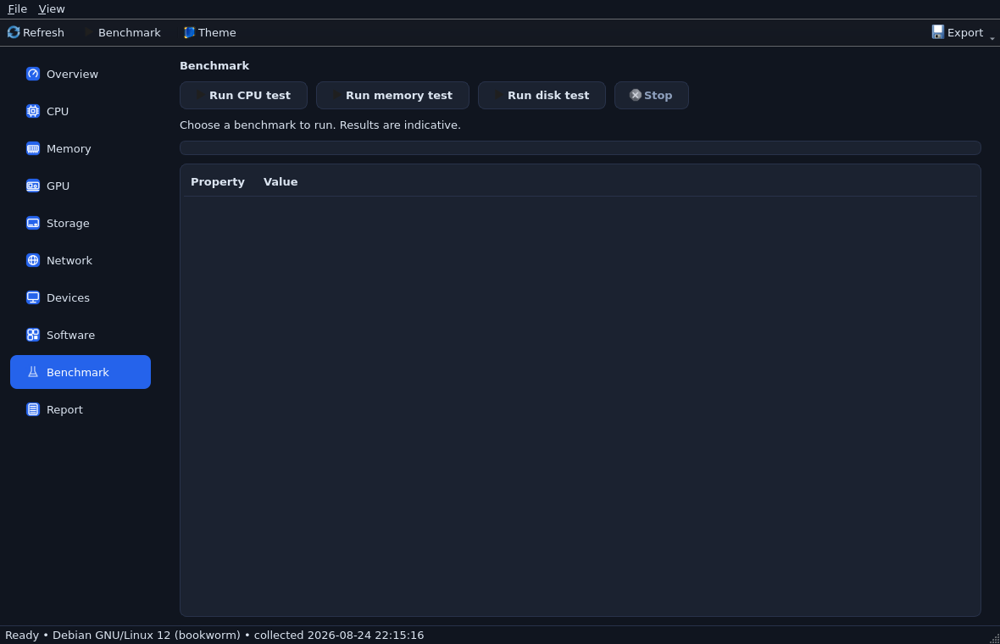
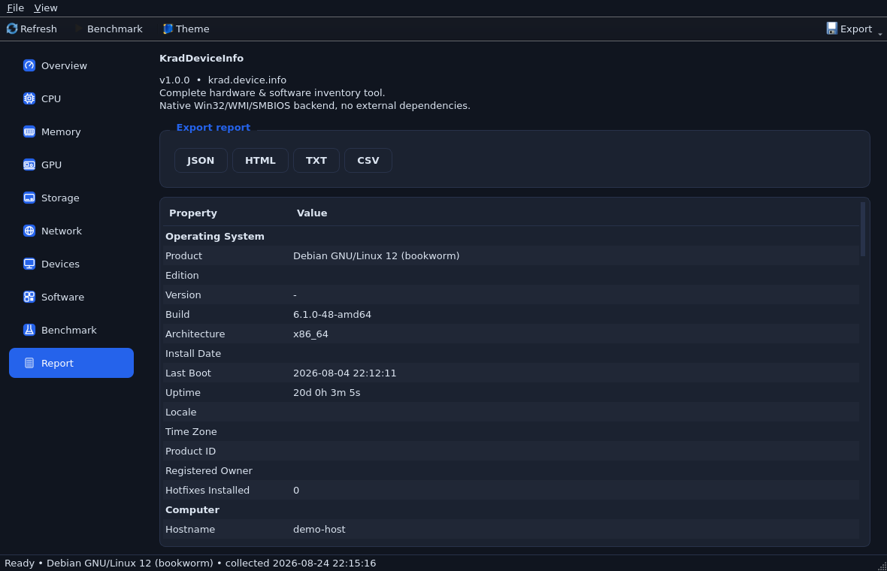

CPU, RAM, GPU, disks, network, monitors, USB, battery, BIOS/SMBIOS — with real-time monitoring, benchmarks and professional reports. One portable executable, zero installation.
Native Win32 / WMI / SMBIOS / PDH backend — no external dependencies.
Brand, cores, caches L1–L3, instruction sets up to AVX-512, clocks, hypervisor, code name.
Per-module SPD: manufacturer, part number, speed MT/s, slot map, ECC.
VRAM, vendor/device IDs, driver version & date, video mode — via DXGI + SetupAPI.
NVMe/SATA/USB, SSD/HDD, health status, firmware, TRIM, partitions, volumes.
Adapters, MAC, IPv4/6, gateway, DNS, DHCP, link speed, traffic counters, live throughput.
Monitors with EDID parsing, USB devices, battery wear %, audio endpoints.
Raw firmware table parser: UUID, board serial, boot mode, Secure Boot.
Installed apps, startup entries, Windows services — searchable.
CPU single/multi, memory bandwidth + latency, disk sequential & 4K random IOPS.
Export to JSON, styled HTML, TXT, CSV — from GUI or command line.
Real download/upload/ping measurement against Cloudflare's global edge network.
Your public IP, country, city, ISP and ASN — one click.
Latency race between Cloudflare, Google, Quad9 and OpenDNS — find your fastest resolver.
Measure your clock drift against NTP time servers to the millisecond.
Built-in HTTP server: watch live CPU/RAM/GPU/disk/net from your phone's browser.
Upload the full report and get a shareable link instantly.
Notifies you when a new version is published — with SHA256-verified downloads.
Fully working builds, cross-compiled with MinGW-w64 + Qt 5.15.2. Verify hashes in SHA256SUMS.txt.
kraddeviceinfo.exe. Includes all Qt runtime DLLs. Windows 7–11 x64.kraddeviceinfo.exe. All Qt runtime DLLs included.Dark theme by default, light theme included.






The same exe works headless — perfect for scripting and inventory automation.
:: export full report kraddeviceinfo --export json -o C:\reports\pc.json kraddeviceinfo --export html :: run benchmarks kraddeviceinfo --bench cpu,memory,disk --duration 10 :: live monitoring to console kraddeviceinfo --monitor --interval 500
Static site — perfect for Cloudflare Pages (free). Three options:
site/ folder → deploy. Done.npx wrangler pages deploy site --project-name kraddeviceinfo (login once with wrangler login).site. Every push auto-deploys.